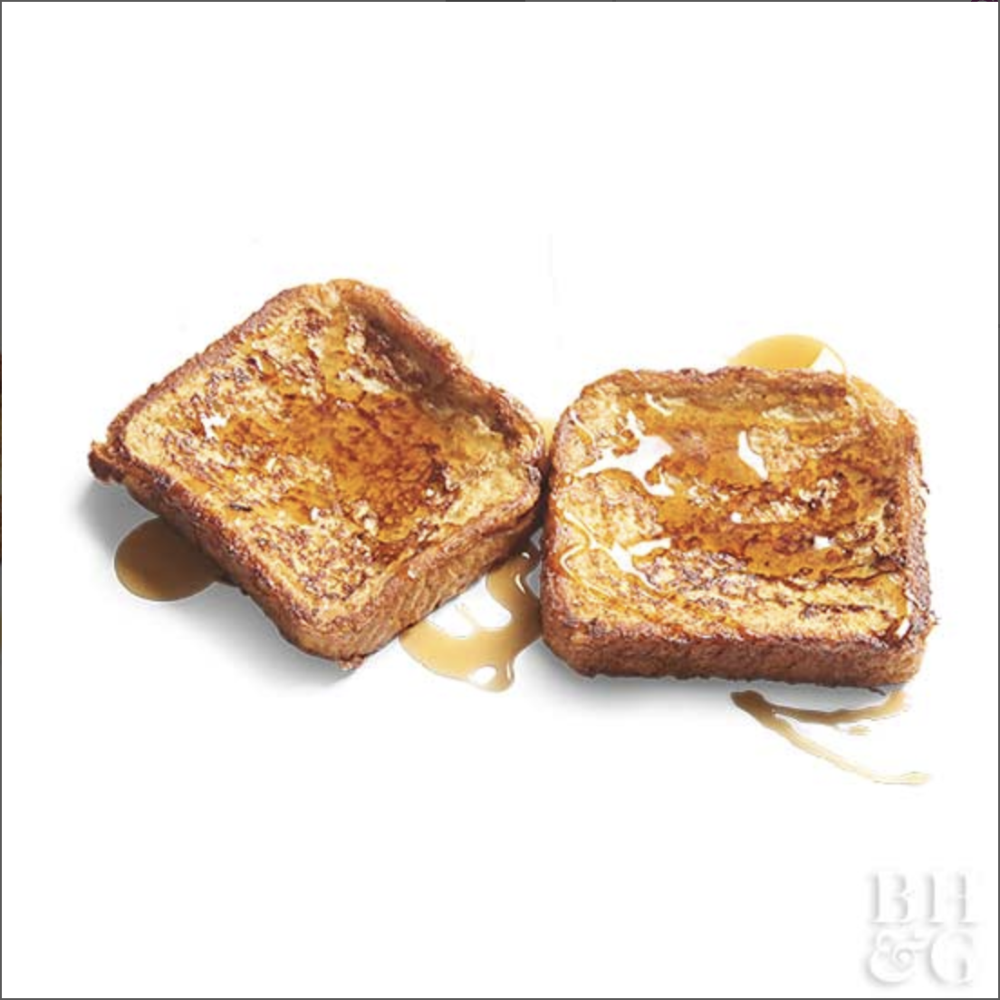

French Toast for One

Ingredients
- 1 egg, slightly beaten
- 0.25 cup of milk, light cream, or half-and-half
- 2 slices of bread
- 1 tablespoon margarine or butter
- Maple-flavored syrup
- Fresh fruit (optional)
Directions
- Step 1: In a shallow flat dish beat together egg and milk with a fork until combined.
Dip bread slices in egg mixture. In a medium skillet melt margarine over medium-heat.
- Step 2: Cook dipped bread slices in margarine for 2 to 3 minutes on each side or until golden brown.
Serve with maple-flavored syrup. Garnish with fresh fruit.
Original Link!
Contact Me!
Email me!
The University of Montana
32 Campus Dr
Missoula, MT 59812